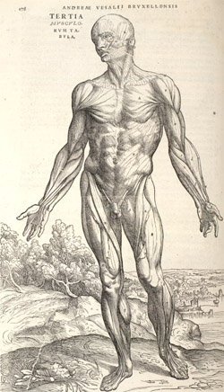

Conclusions
What can be seen from this brief survey of the early history of Vesalius's illustrations is the
international nature of knowledge and the speed of its transmission in sixteenth century Europe.
The story of the making of the Fabrica itself is remarkable from that point of view. Written and
overseen by a Rhinelander teaching at Padua, using designs made by a Netherlander whose drawings
were cut onto blocks by Italian craftsmen at Venice, the book itself was printed at Basel.
The woodcuts used in that first edition of 1543 were almost immediately copied onto copperplates
at London and, beginning in 1545, these plates were used for a whole series of English and French editions.
These copies were so successful that they were copied by first class engravers, at Rome.
What is especially surprising about this story is that not even fundamental religious and political
differences seem to have inhibited the rapid flow of information across borders.

The copperplate copies stripped off all the elaborating detail that Vesalius's artists
had put in to give visual appeal to the woodcuts. The texts were shorter and these
books were therefore cheaper. In many of these editions, the texts were in the vernacular:
English, French, German, Spanish and Italian. They were thus accessible to those who
were called at the time 'the illiterate', that is those who did not read Latin. However
these editions had one considerable drawback: they sacrificed the intimate connection
of text and illustration that had been such an important feature of the original Fabrica .
The engravings were printed onto independent sheets, thus being separated from the text.
Vesalius and Oporinus did succeed in issuing a second edition of the Fabrica in Basle in 1555,
using the original woodblocks. Vesalius's careful weaving of woodcuts and text
was also imitated in Venice, in a reduced-size edition published in 1568.
The importance of illustrations as a means of communicating information was commented
on by Vesalius himself:
...no student of geometry and other mathematical disciplines can fail to
understand how greatly pictures assist the comprehension of these matters
and place them more exactly before the eyes than even the most precise language.
O'Malley, 1964, p.276
The way he articulated his hostility to Geminus's copies of his illustrations is very
revealing about what he valued. In the 1546 Letter on the China root he wrote that
Geminus' plates were poorly done without artistic skill. He claimed that the
'courses of the vessels' that he himself had depicted were misrepresented by Geminus
and that everything was reduced in size, when it really needed to be shown as large
as possible. Although these criticisms were largely unjustified, they do show that
he was particularly concerned about aesthetic appearance, about accuracy
and about didactic efficiency. However, he had a very clear understanding of the
limitations of any illustration:
I believe it is not only difficult but entirely futile and impossible to
attain an understanding of the parts of the body...from pictures...alone,
but no one will deny that they assist very greatly in strengthening the memory
in such matters.
Vesalius had to defend himself against some of his contemporaries who adopted
extreme positions of hostility. He was denounced by one of his old anatomy teachers in
Paris, Sylvius (Jacques Dubois) - a very considerable scholar and a pioneer of
dissection of human cadavers in Paris whom Vesalius had respected, but who was also a
stout Galenist. He misunderstood- or possibly misrepresented- Vesalius's reasons
for using illustrations, saying that they were fictions that distorted
the true proportions of things and concealed in shadows important parts of what
should be known; nothing could replace the things themselves (O'Malley, 1964, pp.239, 251).
In fact, Vesalius certainly did not wish to replace direct experience. On the other
hand the very success of his illustrations carried the danger that the
representations might be substituted for the reality. The copies that were
made of them can, in a sense, be seen as fulfilling Sylvius's gloomy diagnosis.
© 2004 Edinburgh University Library / Royal College of Physicians of Edinburgh
www.lib.ed.ac.uk
10 November 2004
|